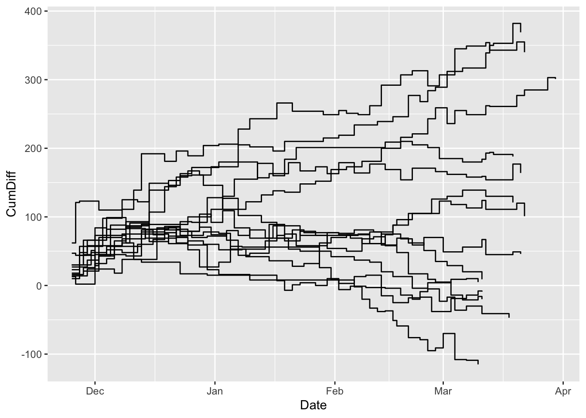
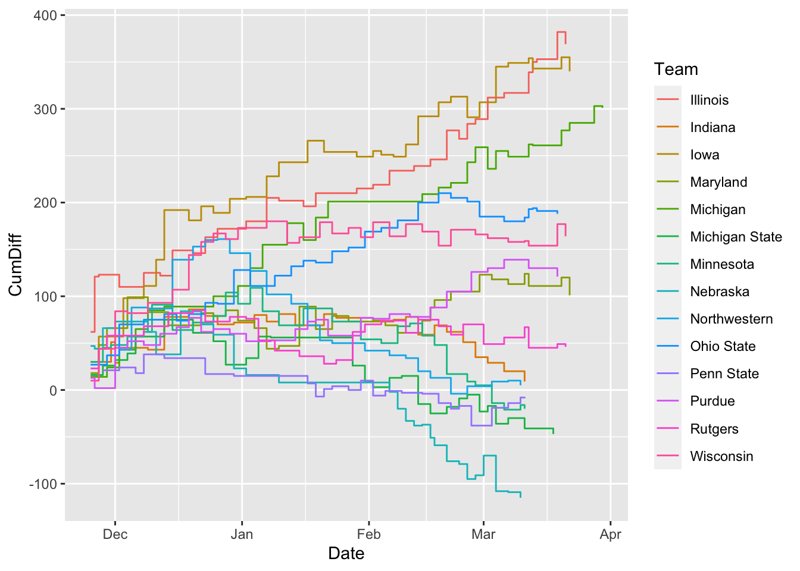
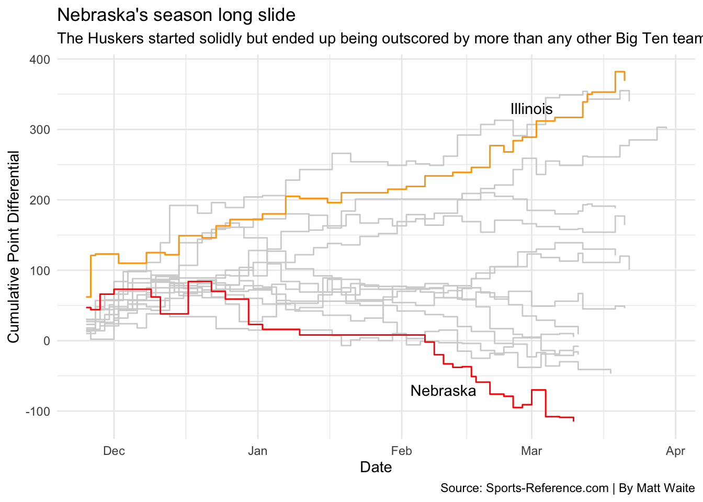

library(tidyverse)20 Step charts
Step charts are a method of showing progress toward something. They combine showing change over time – cumulative change over time – with magnitude. They’re good at inviting comparison.
There’s great examples out there. First is the Washignton Post looking at Lebron passing Jordan’s career point total. Another is John Burn-Murdoch’s work at the Financial Times (which is paywalled) about soccer stars. Here’s an example of his work outside the paywall.
To replicate this, we need cumulative data – data that is the running total of data at a given point. So think of it this way – Nebraska scores 50 points in a basketball game and then 50 more the next, their cumulative total at two games is 100 points.
Step charts can be used for all kinds of things – showing how a player’s career has evolved over time, how a team fares over a season, or franchise history. Let’s walk through an example.
Let’s look at Fred Hoiberg’s team last season.
For this walkthrough:
We’ll need the tidyverse.
And we need to load our logs data we just downloaded.
logs <- read_csv("data/logs21.csv")Rows: 8229 Columns: 48
── Column specification ────────────────────────────────────────────────────────
Delimiter: ","
chr (8): Season, TeamFull, Opponent, HomeAway, W_L, URL, Conference, Team
dbl (39): Game, TeamScore, OpponentScore, TeamFG, TeamFGA, TeamFGPCT, Team3...
date (1): Date
ℹ Use `spec()` to retrieve the full column specification for this data.
ℹ Specify the column types or set `show_col_types = FALSE` to quiet this message.Here we’re going to look at the scoring differential of teams. If you score more than your opponent, you win. So it stands to reason that if you score a lot more than your opponent over the course of a season, you should be very good, right? Let’s see.
The first thing we’re going to do is calculate that differential. Then, we’ll group it by the team. After that, we’re going to summarize using a new function called cumsum or cumulative sum – the sum for each game as we go forward. So game 1’s cumsum is the differential of that game. Game 2’s cumsum is Game 1 + Game 2. Game 3 is Game 1 + 2 + 3 and so on.
difflogs <- logs %>%
mutate(Differential = TeamScore - OpponentScore) %>%
group_by(Team) %>%
mutate(CumDiff = cumsum(Differential))Now that we have the cumulative sum for each, let’s filter it down to just Big Ten teams.
bigdiff <- difflogs %>% filter(Conference == "Big Ten")The step chart is it’s own geom, so we can employ it just like we have the others. It works almost exactly the same as a line chart, but it uses the cumulative sum instead of a regular value and, as the name implies, creates a step like shape to the line instead of a curve.
ggplot() + geom_step(data=bigdiff, aes(x=Date, y=CumDiff, group=Team))
Let’s try a different element of the aesthetic: color, but this time inside the aesthetic. Last time, we did the color outside. When you put it inside, you pass it a column name and ggplot will color each line based on what thing that is, and it will create a legend that labels each line that thing.
ggplot() +
geom_step(
data=bigdiff,
aes(x=Date, y=CumDiff, group=Team, color=Team)
)
From this, we can see a handful of teams in the Big Ten had negative point differentials last season. But which is which? And which one is Nebraska? Too many colors and it’s too hard to tell. How to sort that out? Let’s add some helpers beyond layering.
Let’s look at the top team plus Nebraska.
nu <- bigdiff %>% filter(Team == "Nebraska")
il <- bigdiff %>% filter(Team == "Illinois")Let’s introduce a couple of new things here. First, note when I take the color OUT of the aesthetic, the legend disappears.
The second thing I’m going to add is the annotation layer. In this case, I am adding a text annotation layer, and I can specify where by adding in a x and a y value where I want to put it. This takes some finesse. After that, I’m going to add labels and a theme.
ggplot() +
geom_step(
data=bigdiff,
aes(x=Date, y=CumDiff, group=Team),
color="light grey") +
geom_step(
data=nu,
aes(x=Date, y=CumDiff, group=Team),
color="red") +
geom_step(
data=il,
aes(x=Date, y=CumDiff, group=Team),
color="orange") +
annotate(
"text",
x=(as.Date("2021-02-10")),
y=-70,
label="Nebraska") +
annotate(
"text",
x=(as.Date("2021-03-01")),
y=330,
label="Illinois") +
labs(
x="Date",
y="Cumulative Point Differential",
title="Nebraska's season long slide",
subtitle="The Huskers started solidly but ended up being outscored by more than any other Big Ten team.",
caption="Source: Sports-Reference.com | By Matt Waite") +
theme_minimal()